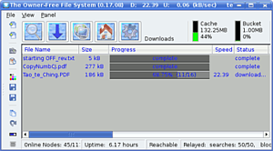

OFF-System
Archivierte Anleitung
Dieser Artikel wurde archiviert, da er - oder Teile daraus - nur noch unter einer älteren Ubuntu-Version nutzbar ist. Diese Anleitung wird vom Wiki-Team weder auf Richtigkeit überprüft noch anderweitig gepflegt. Zusätzlich wurde der Artikel für weitere Änderungen gesperrt.
Zum Verständnis dieses Artikels sind folgende Seiten hilfreich:
Das Owner-Free Filesystem (kurz OFF) ist ein Peer-to-Peer Datenverteilungssystem. Es wandelt darin abgelegte Dateien in gleichförmige, dem Originalinhalt nicht zuzuordnende Blöcke. Blöcke wandern automatisch im System und werden dort beim Einfügen neuer Dateien wiederverwendet. So kann niemand jemals alle Bedeutungen eines Blockes kennen: selbst wenn er einige kennt, kann es beliebig viele weitere geben.

Dies ist der entscheidende Unterschied zu Anonymisierungs-Netzwerken wie etwa Freenet. Anstatt sich hinter anderen Knoten zu verstecken, tauscht OFF nur Blöcke, die keiner Bedeutung eindeutig zugeordnet werden können. Damit erreicht es effektiven Schutz vor Zensur, Abmahnungen und ähnlichen unangenehmen Dingen.
Um sinnvolle Daten ("Bedeutungen") aus dem OFF-System wieder heraus zu bekommen, benötigt man die URL, die beim ursprünglichen Einfügen der Daten erzeugt wurde. Diese enthält die zum Adressieren der richtigen Blöcke nötigen Hashwerte und einen (für das System selbst bedeutungslosen) Dateinamen.
OFF-URLs können auf etwa Webseiten veröffentlicht (ähnlich wie .torrent Dateien, aber man braucht keinen Tracker), privat weitergegeben oder über die integrierte Suchfunktion zugänglich gemacht werden.
Mehr Informationen über die Funktionsweise sind auf offdev.org  zu finden.
zu finden.
Hinweis:
Es mehren sich die Anzeichen, dass das Projekt tot ist. Die letzte Aktualisierung stammt von Anfang 2010, die Webseite ist nicht mehr zu erreichen und Benutzer berichten von verschwundenen Startknoten, welche nötig sind, um überhaupt mit dem Netzwerk Kontakt aufzunehmen.
Installation¶
Beim SourceForge-Projekt offsystem werden DEB-Pakete angeboten. Die unterstützten Ubuntuversionen und Architekturen werden aufgelistet. Nachdem man sie für die korrekte Ubuntuversion und Architektur geladen hat, müssen DEB-Pakete noch installiert werden.
Hinweis!
Fremdpakete können das System gefährden.
existiert das Paket ??
Grundlegende Benutzung¶
Starten¶
Die Paketinstallation legt einen Menüeintrag "OFF System" im Anwendungs- bzw. K-Menü an [2]. Alternativ kann man OFF mit folgendem Befehl starten [3]:
off
Beim ersten Start wird ein Arbeitsverzeichnis ~/.off im Homeverzeichnis des Benutzers angelegt.
Hinweis:
In diesem Verzeichnis befindet auch der Blockcache. Dieser wird bis auf die im OFF Client eingestelle Cachegröße anwachsen. Dort sollte man also nicht mehr einstellen als man bereit ist, an Speicherplatz abzugeben.
Dateien einfügen¶
Anders als bei anderen P2P-Netwerken gibt es in OFF keine Dateifreigabe oder Dateiupload, stattdessen werden Dateien lokal im System abgelegt und in Form von OFF-Blöcken gespeichert und eine URL erstellt. Diese (und NUR diese) erlaubt es, die Datei wieder zurück zu gewinnen.
Zum Einfügen wählt man im Menü "File -> Store". Darauf erscheint ein Informationsfenster, das man mit "OK" bestätigen kann (näheres zu den Optionen siehe Einfüge-Optionen). Danach kann man die einzufügenden Dateien auswählen.
Achtung!
Nicht gleich übertreiben! Es gibt keine "Rückgängig"-Funktion für das Einfügen, man sollte also nicht gleich gigabyteweise Daten in den Cache packen! Beim Einstellen werden für jeden originalen Datenblock bis zu 3 neue OFF-Blöcke erstellt, es wird also bis zum dreifachen der Dateigrößen an Speicherplatz belegt.
URL Weitergabe¶
Damit Benutzer an die eingestellten Daten herankommen können, benötigen sie die passenden URLs. Die auf einem OFF-Knoten gespeicherten URLs können (und werden standardmäßig) über die eingebaute Suchfunktion zur Verfügung gestellt. Möchte man dies nicht, kann man die URL als geschützt markieren. Dazu klickt man im "Local URLs"-Tab auf den entsprechenden Eintrag mit der rechten Maustaste und wählt "Protect". Da es sich bei OFF-URLs, wie der Name schon sagt, nur um ein Stück Text in Form einer URL handelt, können diese auch einfach auf Webseiten, in Foren, etc. weitergegeben werden.
OFF-URLs verweisen wie dieser Beispiel-Link auf localhost, und werden direkt als Download eingefügt wenn man sie bei laufendem OFF-Client anklickt.
{kind=link}
Suchen¶
Die eingebaute Suchfunktion kann benutzt werden, um von Knoten zugänglich gemachte URLs zu suchen. Dabei können mehrere Suchanfragen gleichzeitig gestellt werden. Die Schaltfläche "Clear" schließt die aktuell angezeigt Suche.
Herunterladen¶
Ein Doppelklick auf ein Suchergebnis fügt die URL zu den lokalen URLs hinzu und startet einen Downloadprozess, der die nötigen Blöcke sucht und herunterlädt. Über das Kontextmenü im Download und local URLs Tab können auch URLs aus der Zwischenablagen eingefügt werden, indem man "Paste from Clipboard" wählt. Läuft der OFF Client im Hintergrund, reicht ein Klick auf eine URL - wenn diese als Link in eine Webseite eingebunden ist.
Dateien rekonstruieren¶
Hat man eine URL und alle nötigen Blöcke lokal vorliegen (etwa wenn ein Download abgeschlossen ist), dann kann man nun die eigentliche Datei zurückgewinnen, indem man in der Download- oder LocalURLs-Ansicht auf den entsprechenden Eintrag rechts klickt und "Retrive" wählt. Ist der Prozess abgeschlossen, findet sich die Datei im Verzeichnis ~/.off/retrieved
Hinweis:
Die Rekonstruktion erfolgt ausschließlich auf dem eigenen Rechner. Informationen darüber werden nicht ins Internet übermittelt.
Konfiguration¶
Filter¶
Wer bestimmte Stichwörter nicht in den Suchergebnissen haben will, kann diese unter "Configuration -> Filter" in das Textfeld unter "Incoming Filter" (getrennt mit Leerzeichen) eingeben. Suchergebnisse, die diese Stichwörter enthalten, werden dann verworfen. Das Textfeld unter "Outgoing Filter" leistet selbiges für Suchergebnisse, die der eigene Client an andere weiterreicht.
Dateiverzeichnisse¶
Das Verzeichnis, in dem OFF die rekonstruierten Dateien speichert, kann unter "Configuration -> Options -> Local Node -> Retrive Directory" geändert werden. Direkt darunter kann ein Verzeichnis angegeben werden, dessen Inhalt automatisch in das OFF-System eingefügt werden soll. Dazu zuerst den Haken bei "Disable autostore" entfernen. Dann kann das Verzeichnis angeben werden. Das Feld "Recursive" bestimmt, ob es mitsamt Unterverzeichnissen durchsucht werden soll.
Blockcache¶
Der Blockcache ist der Speicherort für die auf dem eigenen Computer abgelegten OFF-Blöcke, seine Größe kann unter "Configuration -> Blockcache -> Maximum size of block cache" eingestellt werden. Entfernt man den Haken bei "Disable auto cache trimming" werden bei Überschreiten der eingestellten Größe automatisch Blöcke auf andere Knoten verschoben. Nicht verschoben werden Blöcke, die für als "Preserved" gekennzeichnete URLs benötigt werden. Dies sind standardmäßig alle Downloads.
- Erstellt mit Inyoka
-
 2004 – 2017 ubuntuusers.de • Einige Rechte vorbehalten
2004 – 2017 ubuntuusers.de • Einige Rechte vorbehalten
Lizenz • Kontakt • Datenschutz • Impressum • Serverstatus -
Serverhousing gespendet von